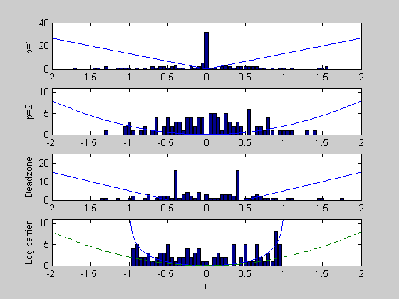

Figure 6.2: Penalty function approximation
randn('state',0);
m=100; n=30;
A = randn(m,n);
b = randn(m,1);
disp('ell-one approximation');
cvx_begin
variable x1(n)
minimize(norm(A*x1+b,1))
cvx_end
disp('ell-2');
x2=-A\b;
dz = 0.5;
disp('deadzone penalty');
cvx_begin
variable xdz(n)
minimize(sum(max(abs(A*xdz+b)-dz,0)))
cvx_end
disp('log-barrier')
alpha=.01; beta=.5;
cvx_begin
variable xlb(n)
minimize norm(A*xlb+b,Inf)
cvx_end
linf = cvx_optval;
A = A/(1.1*linf);
b = b/(1.1*linf);
for iters = 1:50
yp = 1 - (A*xlb+b); ym = (A*xlb+b) + 1;
f = -sum(log(yp)) - sum(log(ym));
g = A'*(1./yp) - A'*(1./ym);
H = A'*diag(1./(yp.^2) + 1./(ym.^2))*A;
v = -H\g;
fprime = g'*v;
ntdecr = sqrt(-fprime);
if (ntdecr < 1e-5), break; end;
t = 1;
newx = xlb + t*v;
while ((min(1-(A*newx +b)) < 0) | (min((A*newx +b)+1) < 0))
t = beta*t;
newx = xlb + t*v;
end;
newf = -sum(log(1 - (A*newx+b))) - sum(log(1+(A*newx+b)));
while (newf > f + alpha*t*fprime)
t = beta*t;
newx = xlb + t*v;
newf = -sum(log(1-(A*newx+b))) - sum(log(1+(A*newx+b)));
end;
xlb = xlb+t*v;
end
ss = max(abs([A*x1+b; A*x2+b; A*xdz+b; A*xlb+b]));
tt = -ceil(ss):0.05:ceil(ss);
[N1,hist1] = hist(A*x1+b,tt);
[N2,hist2] = hist(A*x2+b,tt);
[N3,hist3] = hist(A*xdz+b,tt);
[N4,hist4] = hist(A*xlb+b,tt);
range_max=2.0; rr=-range_max:1e-2:range_max;
figure(1), clf, hold off
subplot(4,1,1),
bar(hist1,N1);
hold on
plot(rr, abs(rr)*40/3, '-');
ylabel('p=1')
axis([-range_max range_max 0 40]);
hold off
subplot(4,1,2),
bar(hist2,N2);
hold on;
plot(rr,2*rr.^2),
ylabel('p=2')
axis([-range_max range_max 0 11]);
hold off
subplot(4,1,3),
bar(hist3,N3);
hold on
plot(rr,30/3*max(0,abs(rr)-dz))
ylabel('Deadzone')
axis([-range_max range_max 0 25]);
hold off
subplot(4,1,4),
bar(hist4,N4);
rr_lb=linspace(-1+(1e-6),1-(1e-6),600);
hold on
plot(rr_lb, -3*log(1-rr_lb.^2),rr,2*rr.^2,'--')
axis([-range_max range_max 0 11]);
ylabel('Log barrier'),
xlabel('r')
hold off
ell-one approximation
Calling SDPT3: 230 variables, 100 equality constraints
------------------------------------------------------------
num. of constraints = 100
dim. of socp var = 200, num. of socp blk = 100
dim. of free var = 30 *** convert ublk to lblk
*******************************************************************
SDPT3: Infeasible path-following algorithms
*******************************************************************
version predcorr gam expon scale_data
NT 1 0.000 1 0
it pstep dstep pinfeas dinfeas gap mean(obj) cputime
-------------------------------------------------------------------
0|0.000|0.000|9.0e-01|6.3e+01|3.2e+05| 1.045672e+02| 0:0:00| chol 1 1
1|1.000|0.882|1.0e-05|7.5e+00|2.0e+04| 2.622372e+03| 0:0:00| chol 1 1
2|1.000|0.990|4.3e-06|9.5e-02|1.6e+03| 8.016733e+02| 0:0:00| chol 1 1
3|0.953|1.000|2.3e-06|3.0e-03|7.5e+01| 6.592898e+01| 0:0:00| chol 1 1
4|0.784|0.271|3.6e-05|2.3e-03|3.3e+01| 5.175219e+01| 0:0:00| chol 1 1
5|0.920|0.209|1.8e-05|1.8e-03|2.1e+01| 4.961556e+01| 0:0:00| chol 1 1
6|0.928|0.439|8.9e-06|1.0e-03|1.1e+01| 5.162648e+01| 0:0:00| chol 1 1
7|0.975|0.470|4.8e-06|5.4e-04|5.4e+00| 5.300594e+01| 0:0:00| chol 1 1
8|1.000|0.328|3.5e-07|3.6e-04|3.6e+00| 5.365787e+01| 0:0:00| chol 1 1
9|1.000|0.474|5.0e-08|1.9e-04|1.9e+00| 5.431941e+01| 0:0:00| chol 1 1
10|1.000|0.617|1.8e-08|7.3e-05|7.0e-01| 5.480849e+01| 0:0:00| chol 1 1
11|0.712|0.265|1.9e-08|5.4e-05|5.1e-01| 5.489203e+01| 0:0:01| chol 1 1
12|1.000|0.216|1.2e-08|4.2e-05|4.1e-01| 5.494415e+01| 0:0:01| chol 1 1
13|1.000|0.448|6.3e-09|2.3e-05|2.2e-01| 5.502483e+01| 0:0:01| chol 1 1
14|1.000|0.780|1.4e-09|5.1e-06|4.9e-02| 5.510542e+01| 0:0:01| chol 1 1
15|0.986|0.975|1.5e-10|1.3e-07|1.2e-03| 5.512833e+01| 0:0:01| chol 1 1
16|0.989|0.989|1.4e-11|1.6e-06|2.3e-05| 5.512891e+01| 0:0:01| chol 1 1
17|0.973|0.945|3.9e-13|3.1e-08|1.0e-06| 5.512892e+01| 0:0:01| chol 1 1
18|0.569|0.944|1.7e-13|1.4e-09|1.0e-07| 5.512892e+01| 0:0:01|
stop: max(relative gap, infeasibilities) < 1.49e-08
-------------------------------------------------------------------
number of iterations = 18
primal objective value = 5.51289216e+01
dual objective value = 5.51289215e+01
gap := trace(XZ) = 1.00e-07
relative gap = 9.00e-10
actual relative gap = 8.41e-10
rel. primal infeas = 1.70e-13
rel. dual infeas = 1.39e-09
norm(X), norm(y), norm(Z) = 1.2e+01, 8.8e+00, 1.3e+01
norm(A), norm(b), norm(C) = 7.9e+01, 1.0e+01, 1.1e+01
Total CPU time (secs) = 0.8
CPU time per iteration = 0.0
termination code = 0
DIMACS: 5.8e-13 0.0e+00 7.6e-09 0.0e+00 8.4e-10 9.0e-10
-------------------------------------------------------------------
------------------------------------------------------------
Status: Solved
Optimal value (cvx_optval): +55.1289
ell-2
deadzone penalty
Calling SDPT3: 300 variables, 130 equality constraints
For improved efficiency, SDPT3 is solving the dual problem.
------------------------------------------------------------
num. of constraints = 130
dim. of socp var = 200, num. of socp blk = 100
dim. of linear var = 100
*******************************************************************
SDPT3: Infeasible path-following algorithms
*******************************************************************
version predcorr gam expon scale_data
NT 1 0.000 1 0
it pstep dstep pinfeas dinfeas gap mean(obj) cputime
-------------------------------------------------------------------
0|0.000|0.000|9.5e+00|1.4e+01|1.2e+04| 3.535534e+01| 0:0:00| chol 1 1
1|1.000|1.000|2.9e-06|1.0e-01|8.6e+02|-4.193082e+02| 0:0:00| chol 1 1
2|1.000|0.856|1.0e-07|2.3e-02|1.3e+02|-6.131583e+01| 0:0:00| chol 1 1
3|0.783|0.818|3.8e-08|5.0e-03|6.9e+01|-3.789956e+01| 0:0:00| chol 1 1
4|0.828|0.790|2.6e-08|1.1e-03|3.2e+01|-2.827240e+01| 0:0:00| chol 1 1
5|0.796|0.872|5.3e-09|1.5e-04|1.2e+01|-2.303367e+01| 0:0:00| chol 1 1
6|0.902|0.973|5.6e-10|5.1e-06|3.9e+00|-2.164155e+01| 0:0:00| chol 1 1
7|0.782|0.804|5.9e-10|1.1e-06|1.6e+00|-2.150812e+01| 0:0:00| chol 1 1
8|0.898|0.870|2.5e-10|1.5e-07|3.6e-01|-2.148161e+01| 0:0:00| chol 1 1
9|0.738|0.860|4.2e-11|2.2e-08|1.1e-01|-2.146101e+01| 0:0:00| chol 1 1
10|0.950|0.904|2.1e-12|2.2e-09|8.3e-03|-2.146885e+01| 0:0:00| chol 1 1
11|0.932|0.980|1.4e-13|5.3e-11|3.8e-04|-2.146814e+01| 0:0:00| chol 1 1
12|0.988|0.988|2.5e-14|1.6e-12|4.4e-06|-2.146821e+01| 0:0:00| chol 1 1
13|0.993|0.996|3.0e-14|1.0e-12|5.8e-08|-2.146821e+01| 0:0:00|
stop: max(relative gap, infeasibilities) < 1.49e-08
-------------------------------------------------------------------
number of iterations = 13
primal objective value = -2.14682118e+01
dual objective value = -2.14682118e+01
gap := trace(XZ) = 5.77e-08
relative gap = 1.31e-09
actual relative gap = 1.31e-09
rel. primal infeas = 3.05e-14
rel. dual infeas = 1.01e-12
norm(X), norm(y), norm(Z) = 1.1e+01, 4.4e+00, 1.2e+01
norm(A), norm(b), norm(C) = 5.8e+01, 1.1e+01, 1.1e+01
Total CPU time (secs) = 0.5
CPU time per iteration = 0.0
termination code = 0
DIMACS: 1.7e-13 0.0e+00 3.9e-12 0.0e+00 1.3e-09 1.3e-09
-------------------------------------------------------------------
------------------------------------------------------------
Status: Solved
Optimal value (cvx_optval): +21.4682
log-barrier
Calling SDPT3: 200 variables, 31 equality constraints
For improved efficiency, SDPT3 is solving the dual problem.
------------------------------------------------------------
num. of constraints = 31
dim. of socp var = 200, num. of socp blk = 100
*******************************************************************
SDPT3: Infeasible path-following algorithms
*******************************************************************
version predcorr gam expon scale_data
NT 1 0.000 1 0
it pstep dstep pinfeas dinfeas gap mean(obj) cputime
-------------------------------------------------------------------
0|0.000|0.000|7.0e+01|1.2e+01|1.8e+03| 0.000000e+00| 0:0:00| chol 1 1
1|0.981|1.000|1.3e+00|9.8e-02|4.5e+01|-6.232429e+00| 0:0:00| chol 1 1
2|1.000|1.000|9.6e-08|9.8e-03|6.5e+00|-3.345428e+00| 0:0:00| chol 1 1
3|1.000|0.799|1.8e-08|2.8e-03|1.5e+00|-1.031687e+00| 0:0:00| chol 1 1
4|0.683|0.777|7.6e-09|6.9e-04|6.8e-01|-1.181387e+00| 0:0:00| chol 1 1
5|0.900|0.845|8.1e-10|1.2e-04|1.9e-01|-1.190459e+00| 0:0:00| chol 1 1
6|0.725|0.701|3.6e-10|3.5e-05|7.7e-02|-1.192951e+00| 0:0:00| chol 1 1
7|0.826|0.879|6.6e-11|4.3e-06|2.1e-02|-1.196197e+00| 0:0:00| chol 1 1
8|0.618|0.956|2.4e-11|2.0e-07|7.6e-03|-1.198192e+00| 0:0:00| chol 1 1
9|0.815|1.000|2.8e-11|9.9e-10|2.3e-03|-1.200331e+00| 0:0:00| chol 1 1
10|0.930|0.971|1.9e-12|1.3e-10|1.6e-04|-1.201199e+00| 0:0:00| chol 1 1
11|0.969|0.812|6.0e-14|2.5e-11|8.5e-06|-1.201268e+00| 0:0:00| chol 1 1
12|0.911|1.000|5.8e-15|1.0e-12|1.1e-06|-1.201270e+00| 0:0:00| chol 1 1
13|0.597|1.000|8.7e-15|1.0e-12|5.8e-07|-1.201270e+00| 0:0:00| chol 1 1
14|0.602|1.000|5.4e-15|1.0e-12|3.1e-07|-1.201270e+00| 0:0:00| chol 1 1
15|0.603|1.000|2.5e-15|1.0e-12|1.7e-07|-1.201270e+00| 0:0:00| chol 1 1
16|0.604|1.000|1.2e-15|1.0e-12|8.8e-08|-1.201270e+00| 0:0:00| chol 1 1
17|0.605|1.000|3.6e-15|1.0e-12|4.6e-08|-1.201270e+00| 0:0:00|
stop: max(relative gap, infeasibilities) < 1.49e-08
-------------------------------------------------------------------
number of iterations = 17
primal objective value = -1.20127042e+00
dual objective value = -1.20127047e+00
gap := trace(XZ) = 4.64e-08
relative gap = 1.36e-08
actual relative gap = 1.36e-08
rel. primal infeas = 3.62e-15
rel. dual infeas = 1.00e-12
norm(X), norm(y), norm(Z) = 3.1e-01, 1.5e+00, 1.5e+01
norm(A), norm(b), norm(C) = 5.7e+01, 2.0e+00, 1.0e+01
Total CPU time (secs) = 0.4
CPU time per iteration = 0.0
termination code = 0
DIMACS: 3.6e-15 0.0e+00 3.4e-12 0.0e+00 1.4e-08 1.4e-08
-------------------------------------------------------------------
------------------------------------------------------------
Status: Solved
Optimal value (cvx_optval): +1.20127
